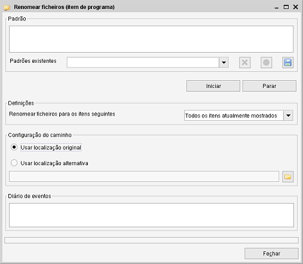
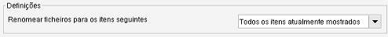
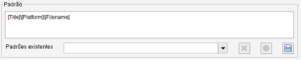
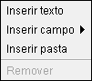

Caminho de menu: Ferramentas > Renomear ficheiros <nome>
Com esta ferramenta pode renomer ou mover ficheiros, usando a informação introduzida no Data Crow.
Os ficheiros são renomeados usando um padrão. Um padrão é um pequeno script, feito de etiquetas que são
substituídas por valores reais quando usadas & aplicadas.

Definições
Nas definições pode indicar quais os itens cujos ficheriros devem ser renomeados.

-
Todos os itens atualmente mostrados
-
Só os itens selecionados
Padrão
O campo Padrão é onde o novo caminho e nome de ficheiro são determinados.

Este campo permite-lhe criar um padrão válido usando o menu emergente do clique com o botão direito. Tem quatro
opções, explicadas abaixo.

Inserir texto
Selecionar esta opção abre um pequeno diálogo onde pode introduzir um texto. Por predefinição,
nenhum dos carateres que podem tornar um nome de ficheiro inválido, tal como ':', é permitido. O texto é usado
tal como está, quando o padrão for aplicado.
Inserir campo
Selecione o campo a inserir. Vai notar que este texto é inserido: [<nomedecampo>].
Esta "etiqueta" será substituída pelo valor real do campo quando o padrão for aplicado.
Inserir pasta
Insere uma barra "\", indicando que deve ser criada uma nova pasta. Tudo o que está antes da barra é agora parte da
estrutura de pastas, em vez do nome de ficheiro.
Remover
Remove a parte selecionada do padrão.
Gravar um padrão
A lista pendente Padrões existentes mostra padrões gravados. Para adicionar um padrão à lista, clique em
.
Gerir padrões gravados
O botão remove o filtro atualmente selecionado existente e
o botão aplica o filtro atualmente selecionado existente.
Configuração do caminho
Usar localização original
Esta é a opção predefinida. Os ficheiros serão renomeados dentro da sua localização atual.
Se o padrão contiver uma estrutura de pastas, o ficheiro será movido relativamente à sua localização atual.
Usar localização alternativa
Pode também escolher mover o ficheiro para outra localização. É uma opção simpática se tiver,
por exemplo, ficheiros MP3 espalhados por várias unidades e quiser juntá-los todos na mesma localização.
Renomear os seus ficheiros
Após ter criado um padrão, clique em Iniciar para começar a renomear os eu ficheiros.
Pré-visualização
Para sua conveniência, o Data Crow mostra-lhe uma pré-visualização dos resultados. O resultado real pode ser
diferente, uma vez que o ficheiro a renomear tem de existir. Se não existir, é simplesmente ignorado.
Excluir itens
A janela de pré-visualização também lhe permite excluir itens. Clique nos itens que quer remover, clique
com o botão direito e selecione Remover no menu emergente. Os itens removidos ficam excluídos da tarefa de
renomeação de ficheiros.
Verifcar e continuar
Clique em Iniciar para continuar o processo, se a pré-visualização lhe agrada.
Clique em Cancelar para parar o processo.
Parar
Pode, em qualquer altura, clicar em Parar para cancelar o processo restante.
 .
.
 remove o filtro atualmente selecionado existente e
o botão
remove o filtro atualmente selecionado existente e
o botão  aplica o filtro atualmente selecionado existente.
aplica o filtro atualmente selecionado existente.